Séminaire de J. Evrard et J. Vassart : quand la balance hémostatique penche vers l'hypocoagulabilité. Trois familles, calquées sur les trois temps de l'hémostase du ch4.4 : anomalies de l'hémostase primaire (plaquettes, von Willebrand), de l'hémostase secondaire (vitamine K, CIVD, hémophilies) et de la fibrinolyse. Pour chaque maladie : le mécanisme, le diagnostic biologique, le traitement. Les dias marquées « pour information » ne sont pas à étudier en détail.
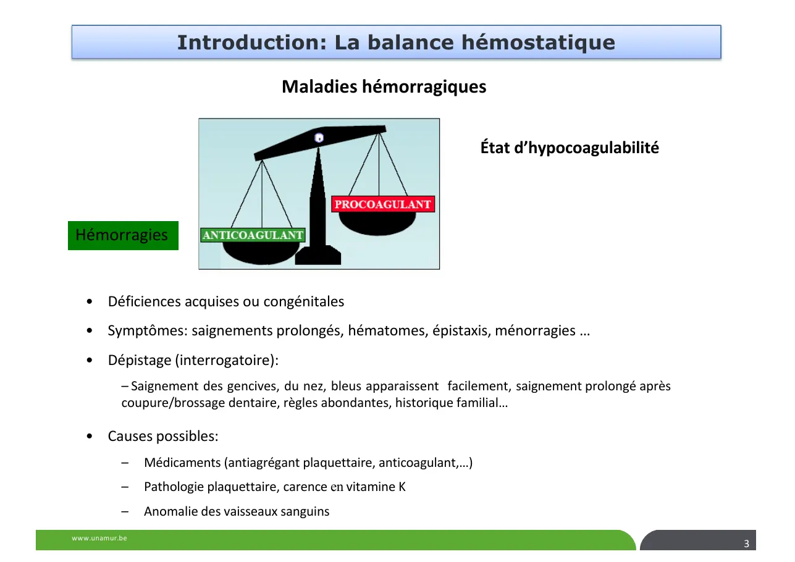
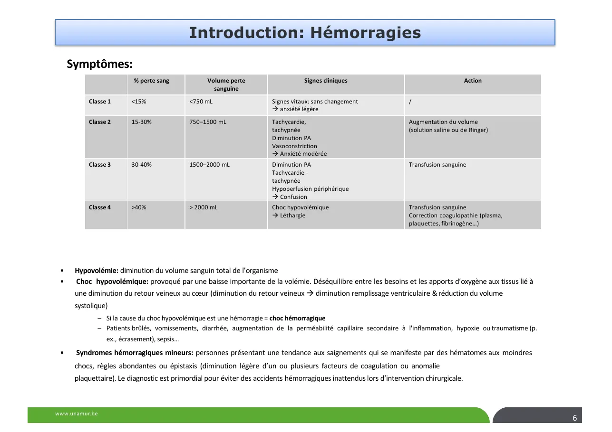
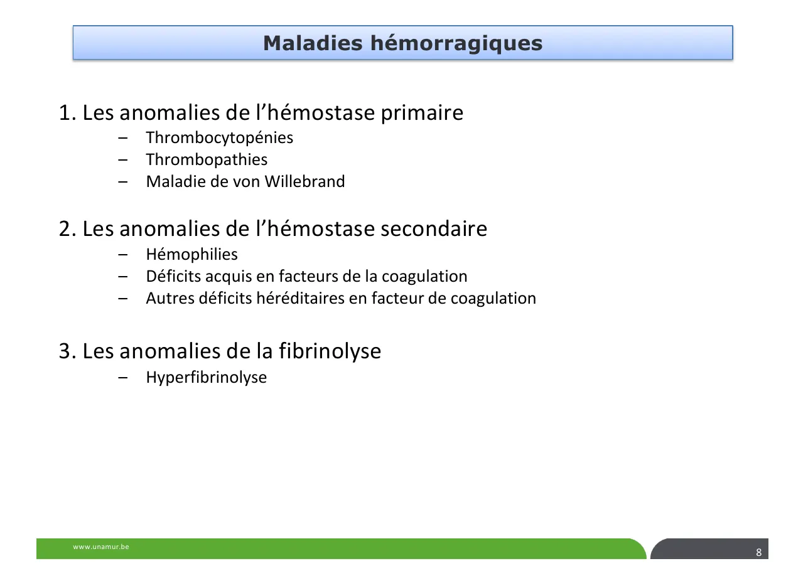
Équilibre entre procoagulants et anticoagulants : trop peu de coagulation = maladies hémorragiques (acquises ou congénitales) ; trop = thromboses (séminaire suivant). Signes : saignements prolongés, hématomes, épistaxis, ménorragies, gencives qui saignent. L'interrogatoire est le premier dépistage (antécédents, médicaments : antiagrégants, anticoagulants). Pertes sanguines classées en 4 classes (< 15 % : peu de signes ; > 40 % : choc).
Trois types d'anomalies de l'hémostase primaire : quantité de plaquettes insuffisante (thrombocytopénies), qualité défaillante (thrombopathies), facteur de von Willebrand anormal. Saignements typiques : cutanéo-muqueux (purpura, pétéchies, épistaxis).
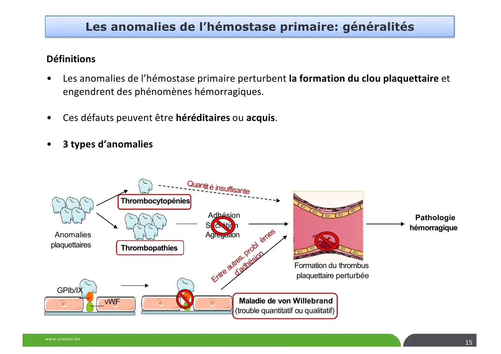
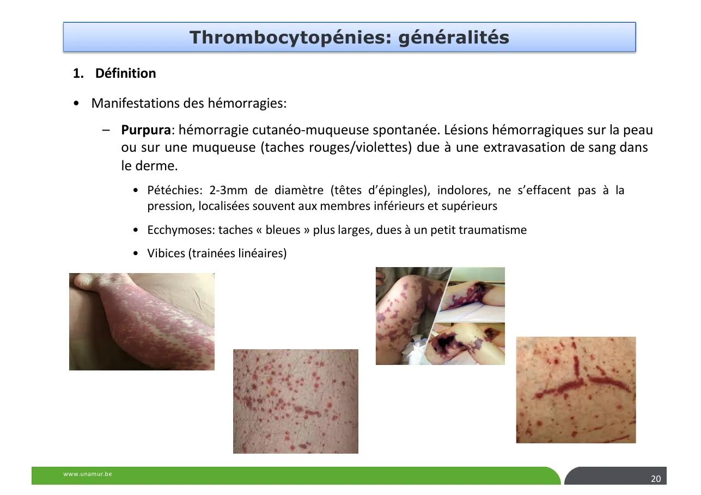
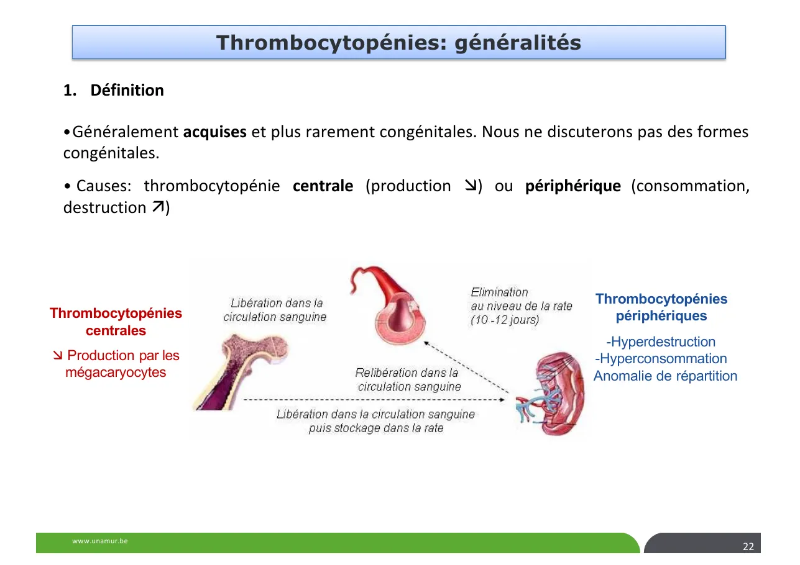
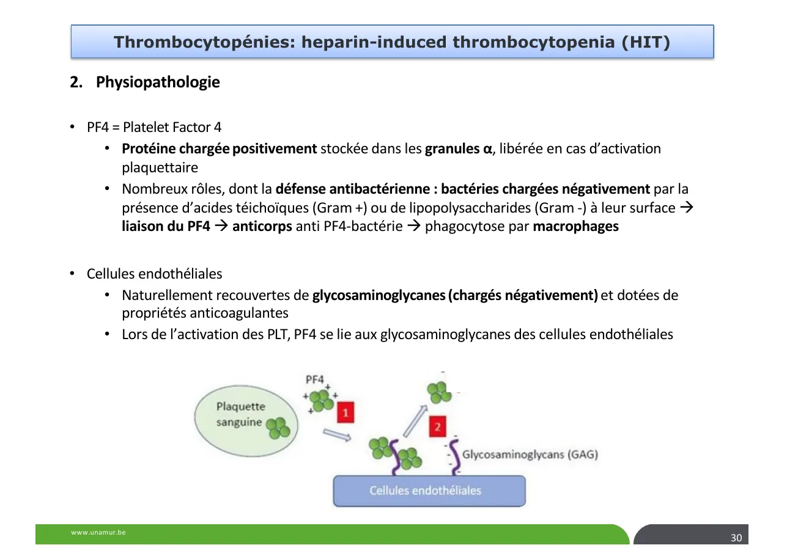
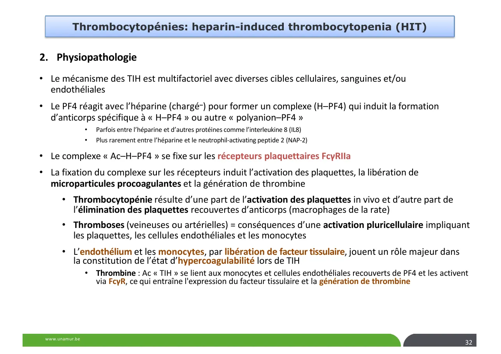
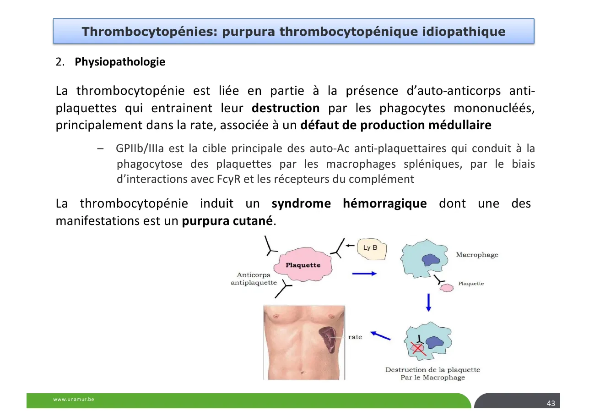
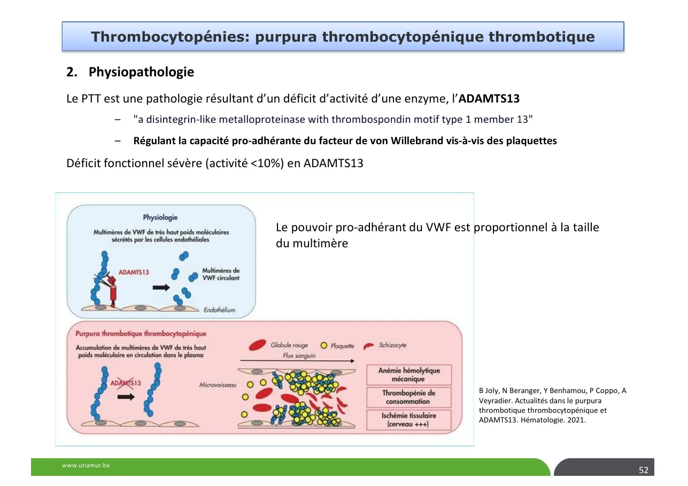
Plaquettes < 100-150 000/µL (norme 150 000-450 000). Au-dessus de 50 000/µL, risque hémorragique très faible. Se méfier des fausses thrombocytopénies (amas de plaquettes avec l'EDTA du tube → recontrôler sur citrate). Causes centrales (moelle : production ↓ : cytostatiques, leucémie, carences B12/folates) ou périphériques (destruction, consommation, séquestration dans la rate).
Un médicament induit des anticorps qui détruisent les plaquettes. Traitement : arrêter le médicament suspect (et tout médicament commencé dans les 2 dernières semaines si polymédication) ; le taux remonte en quelques jours.
Le PF4 (chargé +, granules α) se lie à l'héparine (chargée −) → anticorps IgG anti-héparine-PF4 → ils activent les plaquettes (récepteur FcγRIIa) → consommation des plaquettes et thromboses (paradoxe : maladie prothrombotique). Plus fréquente avec l'HNF (2-3 %) qu'avec l'HBPM (0,2-0,6 %) car les chaînes sont plus longues. Typiquement 5-10 jours après le début. Traitement : arrêter toute héparine et donner sans attendre un autre anticoagulant non héparinique (ex. argatroban, fondaparinux, anti-Xa oraux).
Les anticorps anti-PF4/héparine activent les plaquettes, les monocytes et l'endothélium : les plaquettes sont consommées dans des caillots, et la thrombine est générée en excès. Arrêter l'héparine ne suffit pas : > 50 % thrombosent dans les 30 jours sans anticoagulant de substitution.
Auto-anticorps anti-plaquettes (cible principale : GPIIb/IIIa) → phagocytose par les macrophages de la rate + production médullaire insuffisante. Purpura cutané, souvent peu de symptômes. Diagnostic d'élimination (plaquettes < 100 000, reste de la NFS normal). Traitement selon la gravité : corticoïdes, immunoglobulines IV, agonistes du récepteur de la TPO, splénectomie.
Microangiopathie thrombotique : déficit en ADAMTS13 (activité < 10 %), l'enzyme qui coupe les très grands multimères du vWF. Ces multimères géants collent les plaquettes → microthrombi partout → thrombocytopénie de consommation, anémie hémolytique mécanique (schizocytes), atteinte d'organes (cerveau, rein). Urgence : échanges plasmatiques (apportent l'ADAMTS13 et retirent les multimères).
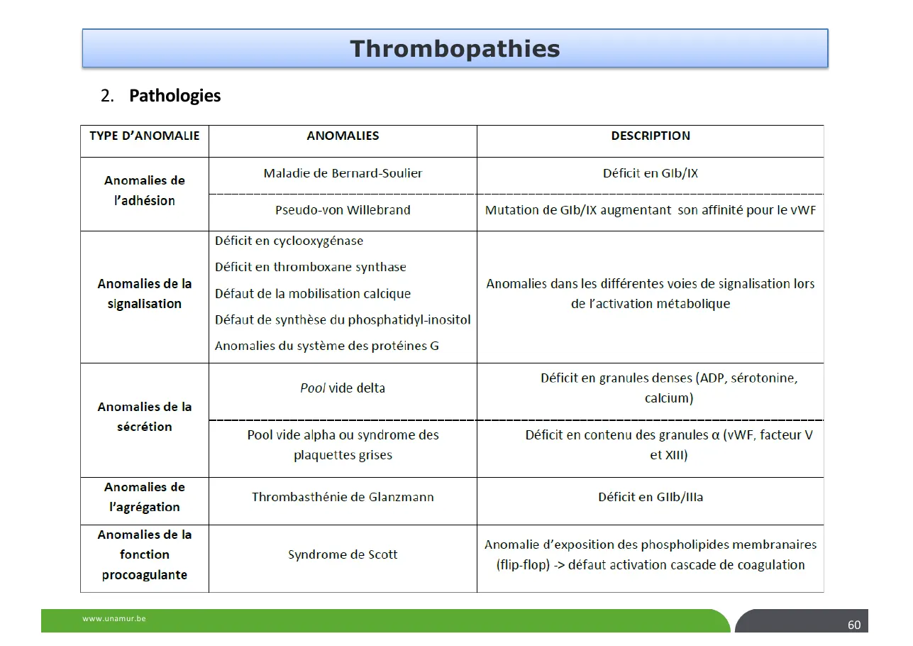
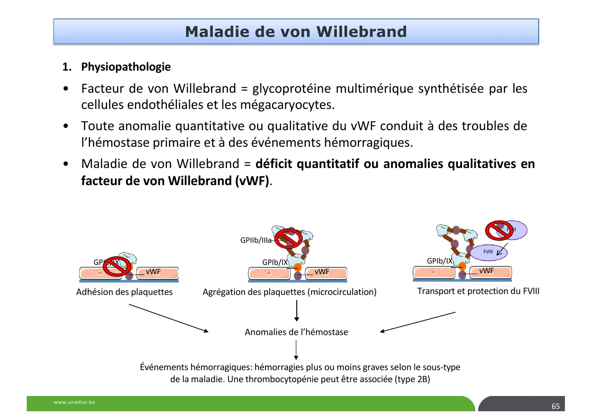
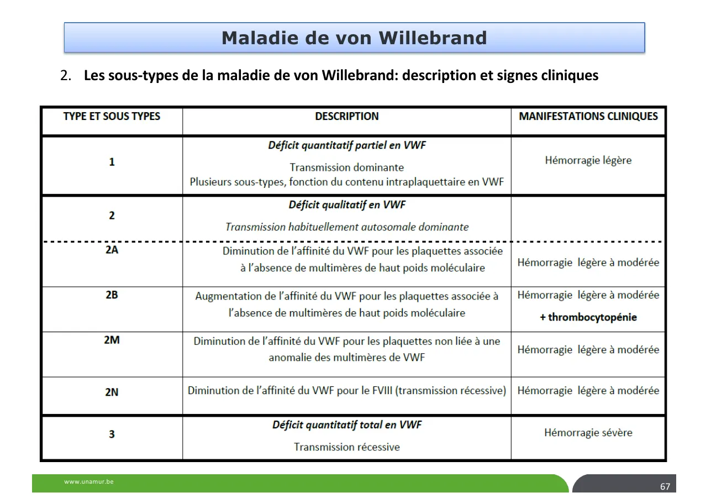
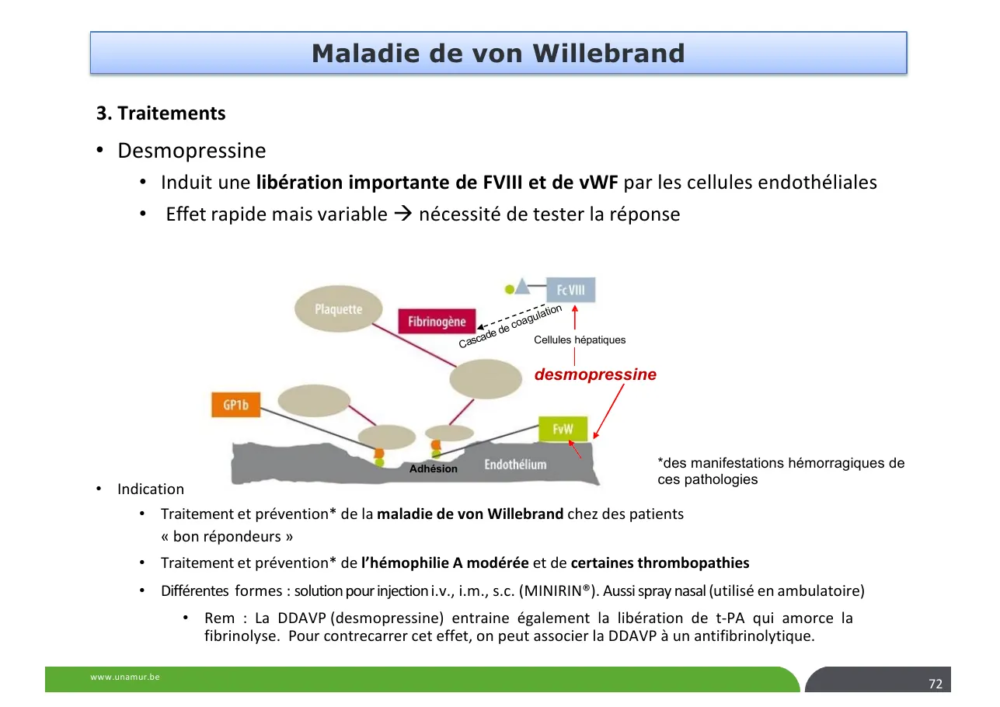
Nombre normal, fonction anormale : adhésion (Bernard-Soulier : GPIb), sécrétion, agrégation (Glanzmann : GPIIb/IIIa). Héréditaires rares ou acquises (antiagrégants, insuffisance rénale ou hépatique). Diagnostic d'exclusion (coagulation et fibrinolyse normales). Traitement : éviter sports à risque et injections IM ; desmopressine ; transfusion de plaquettes avant une chirurgie.
La maladie hémorragique héréditaire la plus fréquente. Le vWF (cellules endothéliales, mégacaryocytes) : 1) adhésion des plaquettes au sous-endothélium (GPIb) ; 2) agrégation en microcirculation ; 3) transport et protection du FVIII. Déficit quantitatif partiel (type 1, le plus fréquent, léger), qualitatif (type 2 : 2A, 2B avec thrombocytopénie, 2M, 2N où le FVIII n'est plus protégé), total (type 3, sévère). Transmission autosomique (dominante ou récessive).
Cet analogue de la vasopressine fait libérer par l'endothélium ses réserves de vWF et de FVIII. Effet rapide mais variable (tester la réponse) ; inutile dans le type 3 (pas de réserve).
Concentrés de vWF ; acide tranexamique (EXACYL®) = antifibrinolytique : il se fixe sur le plasminogène et l'empêche de se lier à la fibrine → le caillot est moins vite détruit (ménorragies, soins dentaires).
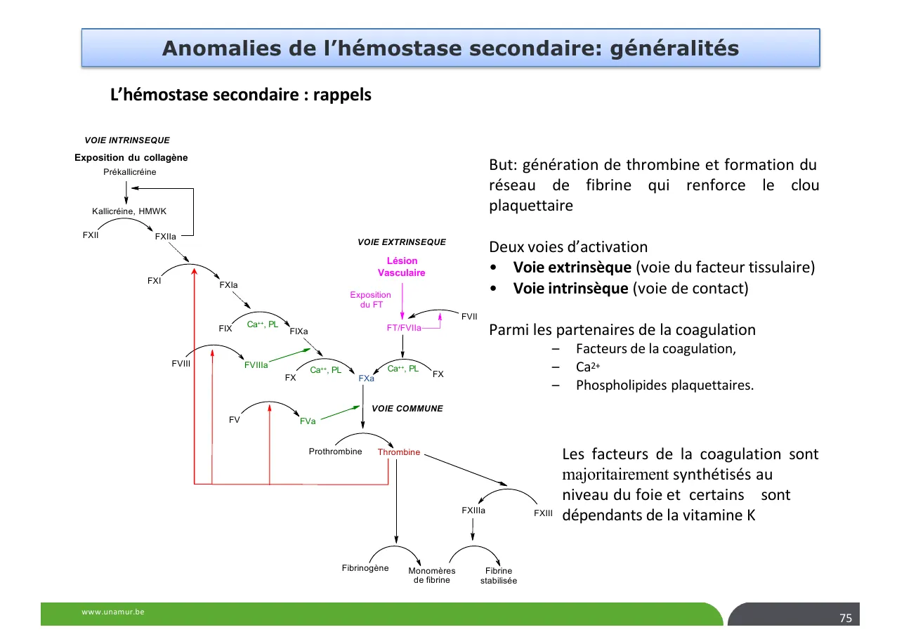
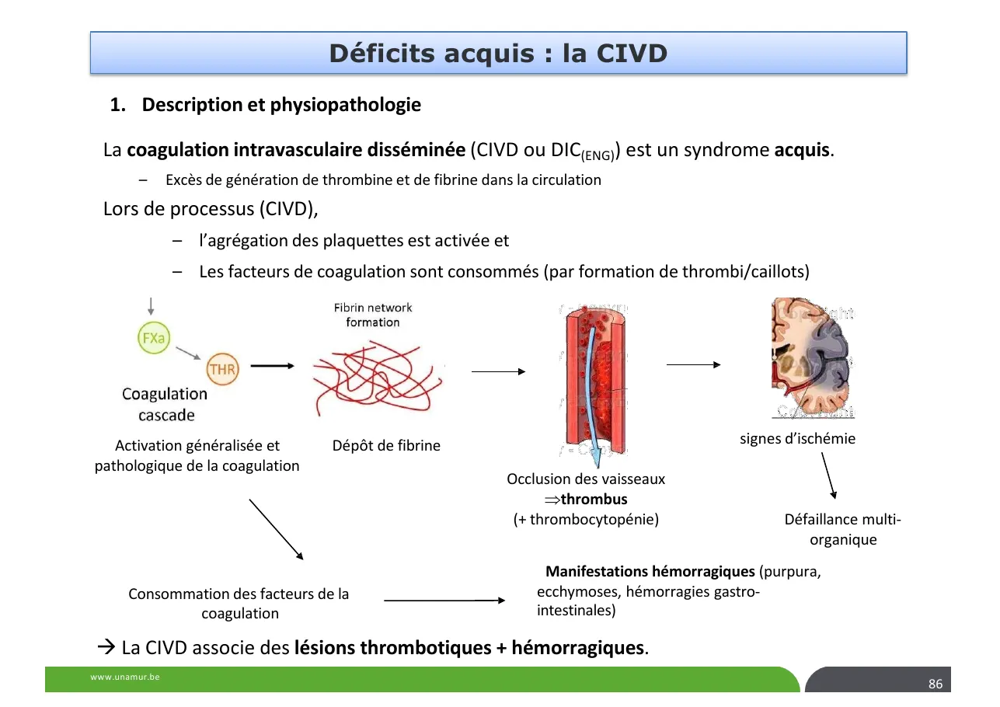
Vitamine K1 (végétaux) et K2 (bactéries intestinales), liposolubles. Causes : nouveau-né (flore immature → vitamine K systématique à la naissance), malabsorption ou atteinte biliaire, antibiotiques, AVK. Bilan : temps de Quick allongé (INR ↑), facteurs II, VII, IX, X ↓, mais facteur V et fibrinogène normaux, plaquettes normales. Traitement : vitamine K (KONAKION®, IV ou per os, correction en 6-12 h) ; si urgence, concentrés de facteurs (PPSB).
Le facteur V est fabriqué par le foie mais ne dépend pas de la vitamine K : il est normal dans la carence en vitamine K et diminué dans l'insuffisance hépatique.
Syndrome acquis : activation généralisée de la coagulation (sepsis, choc, cancer, accouchement compliqué, polytraumatisme) → microthrombi (ischémie, défaillance d'organes) et consommation des plaquettes et des facteurs → hémorragies. Biologie : plaquettes ↓, D-dimères ↑↑, TP allongé, fibrinogène ↓ (score ISTH). Traitement : traiter la cause ; transfusion de plaquettes, plasma, fibrinogène selon les saignements.
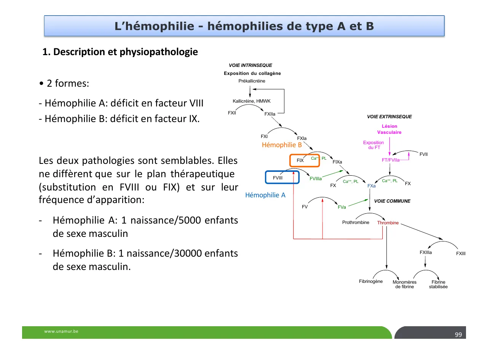
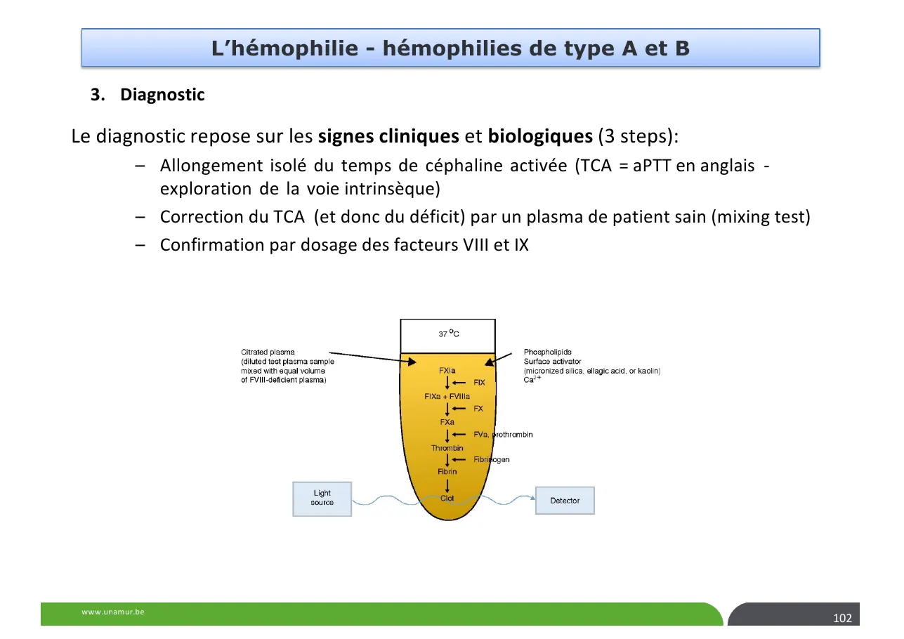
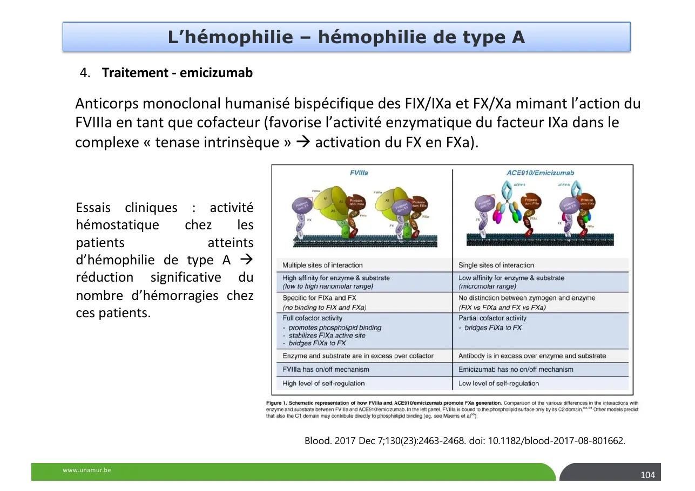
Hémophilie A = déficit en FVIII (1/5000 garçons) ; B = déficit en FIX (1/30 000). Récessives liées à l'X → presque que des garçons ; les femmes sont conductrices (les tsars de Russie). Saignements profonds : hémarthroses (articulations), hématomes musculaires. Les maladies hémorragiques graves les plus fréquentes.
1) TCA (temps de céphaline activée, voie intrinsèque) allongé isolément (TP et plaquettes normaux) ; 2) correction du TCA par un plasma normal (= déficit, pas d'inhibiteur) ; 3) dosage des FVIII et FIX.
Le FVIII et le FIX appartiennent à la voie intrinsèque, explorée par le TCA. Le temps de Quick explore la voie extrinsèque (FT, VII) et commune : il reste normal.
Substitution : FVIII (plasmatique ou recombinant) ou FIX ; desmopressine dans l'hémophilie A légère ; emicizumab (Hemlibra®) : anticorps bispécifique qui relie FIXa et FX et mime le FVIIIa (sous-cutané, prophylaxie). Complications : infections transmises autrefois par les produits sanguins (VIH, hépatites), anticorps inhibiteurs anti-FVIII/IX, arthropathie.
Déficits héréditaires rares en II, V, VII, X, XI, XIII et fibrinogène. Remarque : le déficit en FXII allonge le TCA sans saigner (rôle mineur in vivo).
Fibrinolyse excessive non compensée → le caillot se dissout trop tôt → saignements. Congénitale (déficit en PAI-1 ou en α2-antiplasmine) ou acquise (CIVD, tumeurs, anévrismes). Diagnostic : temps de lyse des euglobulines (test de von Kaulla). Traitement : antifibrinolytiques (acide tranexamique).
Pas d'enregistrement du séminaire. Ce qui suit vient du cours du 3/11/2025 (JV), qui annonçait cette partie.
Questions reformulées à partir de la structure du séminaire (mécanisme, diagnostic, traitement pour chaque maladie).
| Situation | Plaquettes | TP (Quick) | TCA |
|---|---|---|---|
| Thrombocytopénie (PTI…) | ↓ | normal | normal |
| Thrombopathie | normales | normal | normal |
| Von Willebrand | normales (↓ si 2B) | normal | normal ou ↑ (FVIII ↓) |
| Hémophilie A ou B | normales | normal | ↑ isolé |
| Carence en vitamine K / AVK | normales | ↑ (INR ↑) | ↑ ou normal |
| CIVD | ↓ | ↑ | ↑ |
Un patient hospitalisé sous héparine non fractionnée depuis 7 jours voit ses plaquettes chuter de 60 % et développe une thrombose veineuse. Que suspectez-vous et que faire ?